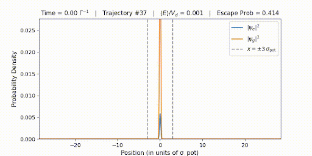
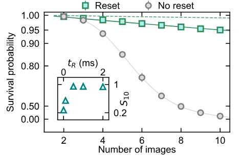
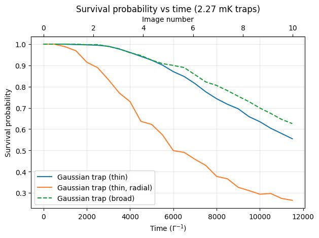
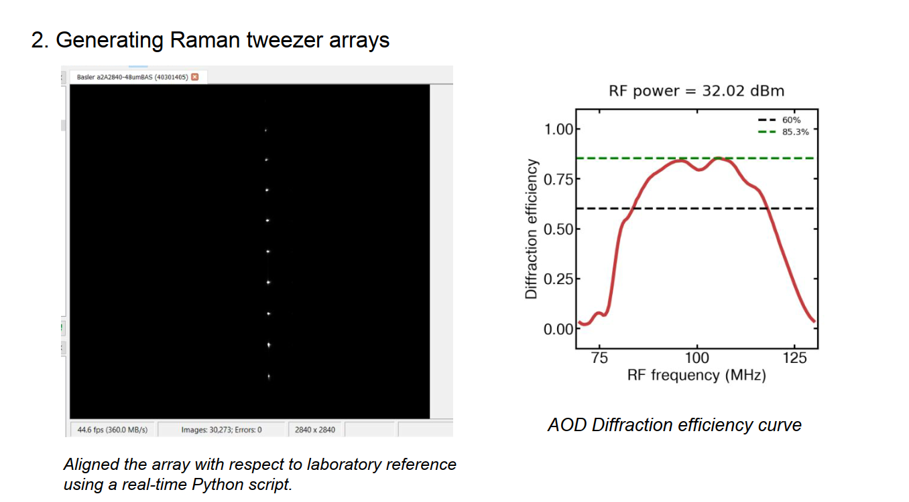
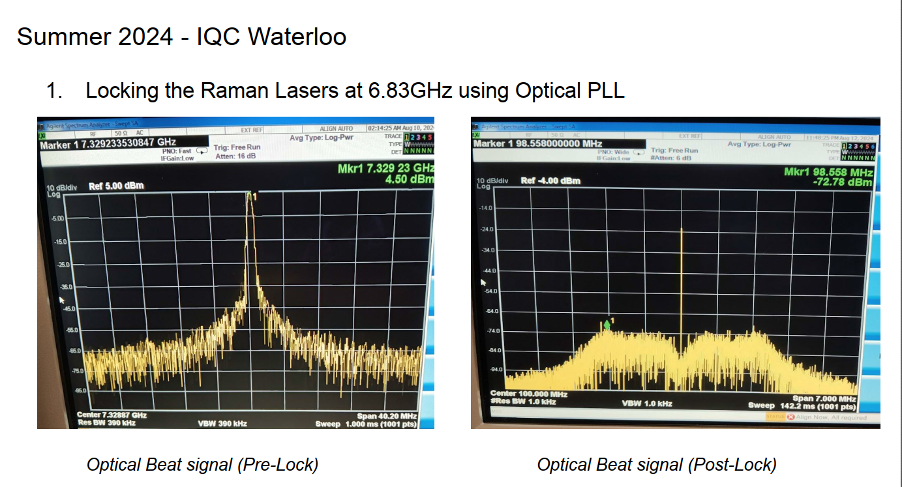

Experimental and simulation work in neutral-atom quantum systems.
Master’s project — IIT Madras, 2024–2025
Evolution of neutral atoms in optical tweezers under resonant imaging
Studied the dynamics of a neutral atom trapped in a Gaussian optical tweezer while being continuously imaged with a near-resonant beam. Each scattered photon imparts ±ℏk recoil and drives internal state transitions, causing a competition between trapping and heating that eventually leads to atom loss. This process limits the fidelity of non-destructive measurements in tweezer-based quantum computing platforms.

Evolution of a marginally trapped atomic wavepacket (KE ≈ Vd) in an optical dipole trap.


Loss probability comparison for imaged Yb atoms. Left: Falconi et al., PRL (2025). Right: simulation results.
Summer internship — Rb Quantum Simulator lab
Optical tweezers and laser locking for a Rb quantum simulator
Worked on two problems: generating optical tweezers using an acousto-optic deflector (AOD) for a Raman laser, and phase-locking two Raman lasers using an optical phase-locked loop (OPLL).

Optical tweezers of the Raman laser generated using an AOD (left). Optimised diffraction efficiency curve (right).

Laser lock spectrum of Raman lasers using an optical phase-locked loop.